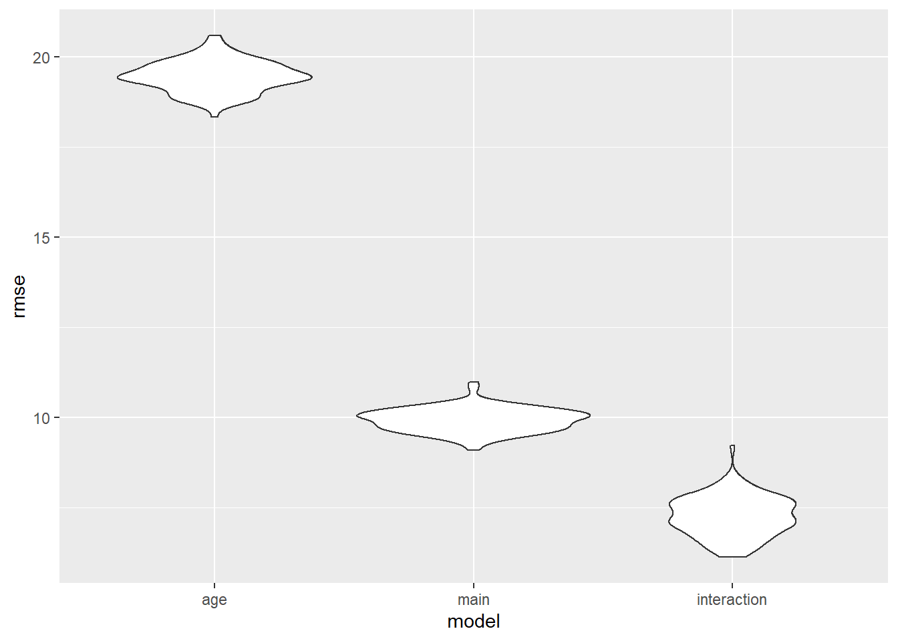

We propose 3 models for prediction based on previous analysis:
Linear Model of city_perc_fully ~ age_group
Linear Model of city_perc_fully ~ age_group + race_ethnicity
Linear Model of city_perc_fully ~ age_group + race_ethnicity + age_group * race_ethnicity, assuming that there are interaction
fit_lm_age = lm(city_perc_fully ~ age_group, data = unstratified )
fit_lm_age %>% broom::tidy() %>% knitr::kable(digits = 2)| term | estimate | std.error | statistic | p.value |
|---|---|---|---|---|
| (Intercept) | 2.50 | 1.77 | 1.41 | 0.16 |
| age_group’13-17 | 73.06 | 1.88 | 38.76 | 0.00 |
| age_group’18-44 | 74.81 | 1.88 | 39.70 | 0.00 |
| age_group’45-64 | 79.41 | 1.88 | 42.14 | 0.00 |
| age_group’5-12 | 42.17 | 1.88 | 22.37 | 0.00 |
| age_group’65+ | 73.94 | 1.88 | 39.23 | 0.00 |
fit_lm_main = lm(city_perc_fully ~ age_group + race_ethnicity,
data = unstratified )
fit_lm_main %>% broom::tidy() %>% knitr::kable(digits = 2)| term | estimate | std.error | statistic | p.value |
|---|---|---|---|---|
| (Intercept) | 29.83 | 0.94 | 31.78 | 0 |
| age_group’13-17 | 73.06 | 0.96 | 75.93 | 0 |
| age_group’18-44 | 74.81 | 0.96 | 77.76 | 0 |
| age_group’45-64 | 79.41 | 0.96 | 82.54 | 0 |
| age_group’5-12 | 42.17 | 0.96 | 43.83 | 0 |
| age_group’65+ | 73.94 | 0.96 | 76.85 | 0 |
| race_ethnicityBlack | -41.28 | 0.41 | -100.96 | 0 |
| race_ethnicityHispanic/Latino | -27.57 | 0.41 | -67.43 | 0 |
| race_ethnicityWhite | -40.44 | 0.41 | -98.91 | 0 |
fit_lm_interaction = lm(city_perc_fully ~ age_group + race_ethnicity +
age_group * race_ethnicity,
data = unstratified )
fit_lm_interaction %>% broom::tidy() %>% knitr::kable(digits = 2)| term | estimate | std.error | statistic | p.value |
|---|---|---|---|---|
| (Intercept) | 4.32 | 1.33 | 3.25 | 0.00 |
| age_group’13-17 | 110.21 | 1.41 | 78.04 | 0.00 |
| age_group’18-44 | 97.70 | 1.41 | 69.18 | 0.00 |
| age_group’45-64 | 96.80 | 1.41 | 68.55 | 0.00 |
| age_group’5-12 | 79.58 | 1.41 | 56.35 | 0.00 |
| age_group’65+ | 89.97 | 1.41 | 63.71 | 0.00 |
| race_ethnicityBlack | -3.87 | 1.88 | -2.06 | 0.04 |
| race_ethnicityHispanic/Latino | -3.77 | 1.88 | -2.01 | 0.04 |
| race_ethnicityWhite | 0.38 | 1.88 | 0.20 | 0.84 |
| age_group’13-17:race_ethnicityBlack | -51.50 | 2.00 | -25.79 | 0.00 |
| age_group’18-44:race_ethnicityBlack | -38.98 | 2.00 | -19.52 | 0.00 |
| age_group’45-64:race_ethnicityBlack | -27.07 | 2.00 | -13.55 | 0.00 |
| age_group’5-12:race_ethnicityBlack | -51.53 | 2.00 | -25.80 | 0.00 |
| age_group’65+:race_ethnicityBlack | -22.87 | 2.00 | -11.45 | 0.00 |
| age_group’13-17:race_ethnicityHispanic/Latino | -33.06 | 2.00 | -16.55 | 0.00 |
| age_group’18-44:race_ethnicityHispanic/Latino | -17.36 | 2.00 | -8.69 | 0.00 |
| age_group’45-64:race_ethnicityHispanic/Latino | -11.50 | 2.00 | -5.76 | 0.00 |
| age_group’5-12:race_ethnicityHispanic/Latino | -44.51 | 2.00 | -22.29 | 0.00 |
| age_group’65+:race_ethnicityHispanic/Latino | -15.71 | 2.00 | -7.87 | 0.00 |
| age_group’13-17:race_ethnicityWhite | -64.06 | 2.00 | -32.08 | 0.00 |
| age_group’18-44:race_ethnicityWhite | -35.23 | 2.00 | -17.64 | 0.00 |
| age_group’45-64:race_ethnicityWhite | -30.99 | 2.00 | -15.52 | 0.00 |
| age_group’5-12:race_ethnicityWhite | -53.63 | 2.00 | -26.85 | 0.00 |
| age_group’65+:race_ethnicityWhite | -25.55 | 2.00 | -12.79 | 0.00 |
Although race is not statistically significant under the critical value alpha = 0.05, it increases the prediction ability of the simple linear model : lm(city_perc_fully ~ age_group). What’s more, we notice that interaction term is contributing to model predictability as well. We would say the interaction model will be better than the other one because its root means square error seems to be smaller. Therefore, interaction model could be useful for predicting the fully vaccinated rate in NYC.
cv_df =
crossv_mc(unstratified, 100) %>%
mutate(
train = map(train, as_tibble),
test = map(test, as_tibble))cv_df =
cv_df %>%
mutate(
age_mod = map(train, ~lm(city_perc_fully ~ age_group, data = .x)),
main_mod = map(train, ~lm(city_perc_fully ~ age_group + race_ethnicity, data = .x)),
interaction_mod = map(train, ~lm(city_perc_fully ~ age_group + race_ethnicity + age_group * race_ethnicity, data = .x))) %>%
mutate(
rmse_age = map2_dbl(age_mod, test, ~rmse(model = .x, data = .y)),
rmse_main = map2_dbl(main_mod, test, ~rmse(model = .x, data = .y)),
rmse_interaction = map2_dbl(interaction_mod, test, ~rmse(model = .x, data = .y)))cv_df %>%
select(starts_with("rmse")) %>%
pivot_longer(
everything(),
names_to = "model",
values_to = "rmse",
names_prefix = "rmse_") %>%
mutate(model = fct_inorder(model)) %>%
ggplot(aes(x = model, y = rmse)) + geom_violin()
We select the linear Model of * city_perc_fully ~ age_group + race_ethnicity + age_group * race_ethnicity
Age, race and their interaction term are good predictors for anticipating the Covid vaccination rate in NYC.